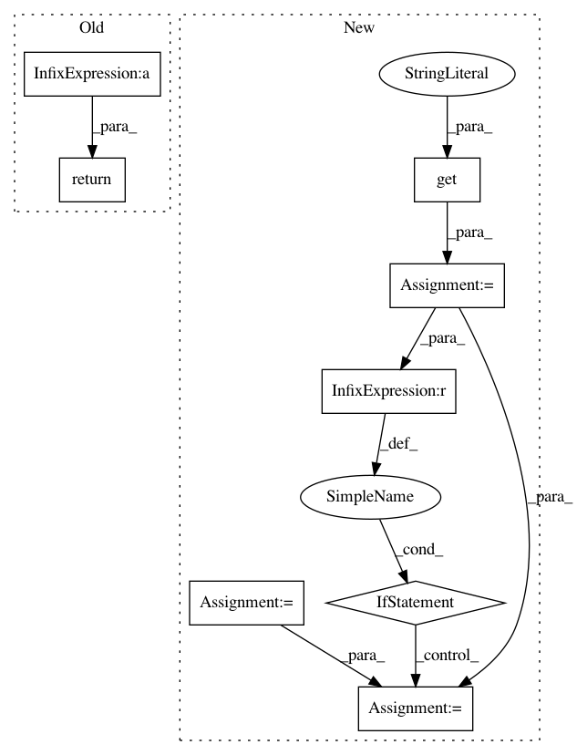

f9362e87bd07346492802c30fe71192401f9195e,fairseq/criterions/cross_entropy.py,CrossEntropyCriterion,aggregate_logging_outputs,#Any#,41
Before Change
def aggregate_logging_outputs(logging_outputs):
Aggregate logging outputs from data parallel training.
sample_size = sum(log.get("sample_size", 0) for log in logging_outputs)
return {
"loss": sum(log.get("loss", 0) for log in logging_outputs) / sample_size / math.log(2),
}
After Change
@staticmethod
def aggregate_logging_outputs(logging_outputs):
Aggregate logging outputs from data parallel training.
loss_sum = sum(log.get("loss", 0) for log in logging_outputs)
ntokens = sum(log.get("ntokens", 0) for log in logging_outputs)
sample_size = sum(log.get("sample_size", 0) for log in logging_outputs)
agg_output = {
"loss": loss_sum / sample_size / math.log(2),
}
if sample_size != ntokens:
agg_output["nll_loss"] = loss_sum / ntokens / math.log(2)
return agg_output
In pattern: SUPERPATTERN
Frequency: 3
Non-data size: 8
Instances
Project Name: pytorch/fairseq
Commit Name: f9362e87bd07346492802c30fe71192401f9195e
Time: 2018-01-22
Author: myleott@fb.com
File Name: fairseq/criterions/cross_entropy.py
Class Name: CrossEntropyCriterion
Method Name: aggregate_logging_outputs
Project Name: horovod/horovod
Commit Name: c7dfdcef44d181ee2b834e3b0fb06c9c82f952b3
Time: 2019-11-20
Author: github@enrico.minack.dev
File Name: horovod/run/common/util/host_hash.py
Class Name:
Method Name: host_hash